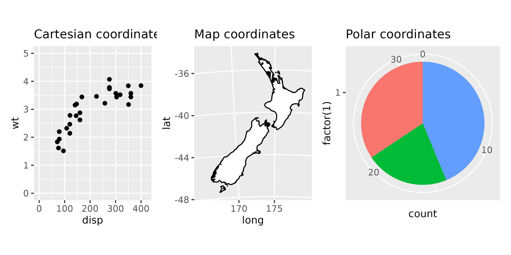
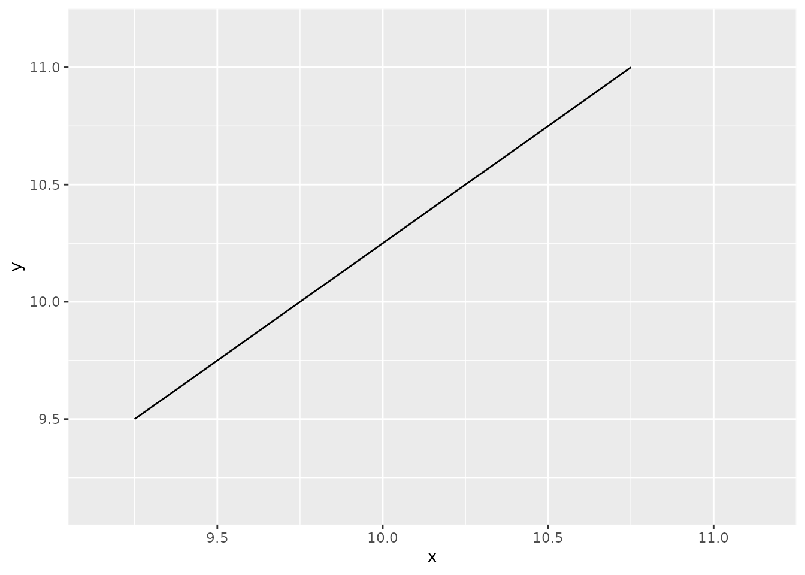
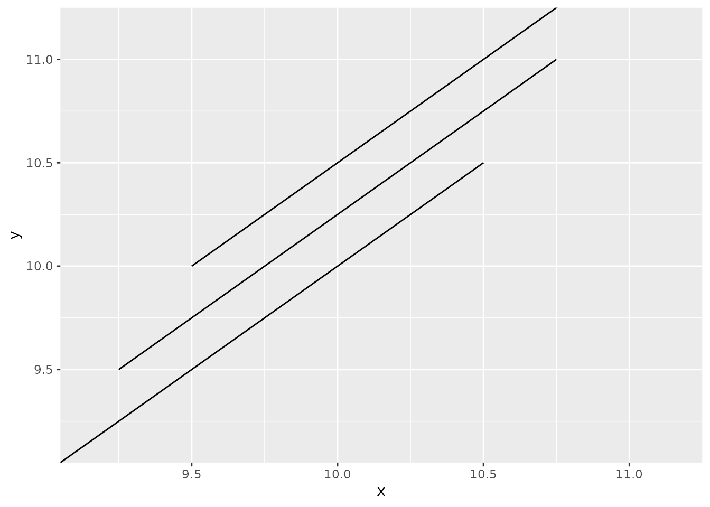
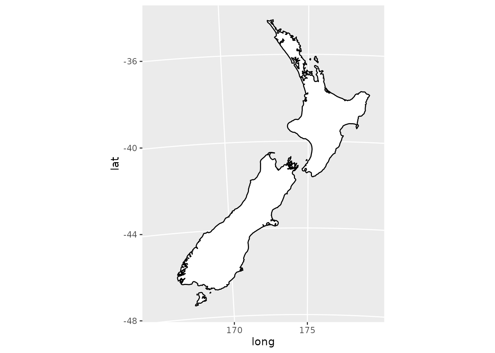

library(ggplot2)
rectangle <- data.frame(
x = c(0, 8, 8, 0),
y = c(0, 0, 2, 2)
)
line <- data.frame(
x = c(0.67,12.3),
y = c(0.67,12.3)
)
star <- data.frame(
x = c(3, 4, 7, 4, 3, 2, -1, 2),
y = c(3, 6, 7, 8, 11, 8, 7, 6) + 1
)
ggplot() +
geom_polygon(aes(x, y), fill = "cyan",
data = rectangle) +
geom_line(aes(x, y), data = line) +
geom_polygon(aes(x, y), fill = "red",
data = star)1 Coordinates, Angles and Objects
I begin this book by introducing some basic math, and also some technical terms (a.k.a. “jargon”) from computer graphics that will help you follow along. The idea of this chapter is to be a really simple and quick introduction to the most essential math concepts that we use while drawing things in a computer screen.
First, I explain and establish some jargon’s used across this book, for those readers that are not very familiar with the world of computer graphics. Second, I talk about coordinate systems, and the Cartesian plane, as the main coordinate system used here in this book. Third, I end this chapter talking about angles, circles and everything you need to know about trigonometry (which is not much).
1.1 Describing some technical terms
Now, I want to give you the meaning of some technical terms (a.k.a “jargons”) that I will frequently use across this book. I understand that not all readers of this book are familiarized with the world of computer graphics, and that is precisely why this section of the book exists.
1.1.1 Canvas
The term “canvas” comes from the world of painting. Canvas is essentially the surface area that you have available to paint your art. It is that blank and white board that we see all the time in films and photos, where the artist paint its art.
In computer graphics, the term canvas have essentially the same meaning. That is, canvas is the visual space of the image where we can draw things. We begin with a blank canvas, or a blank image, and we start drawing things into this space to form the graph, or the art we want to build.
1.1.2 Plot vs Image
The R package ggplot2 is, essentially, a data visualization framework with focus on statistics, data exploration and data analysis. Because of that, users normally refer to the output of ggplot2 code, as a “plot”.
So I understand that some R and ggplot2 users might “cringe” when I use the word “image” instead of “plot”. Anyway, here in this book, I will use the words “plot” and “image” interchangeably. When you see the word “image” in this book, just interprets as “the ggplot2 code output”, or, as “the image that is produced by ggplot2”.
1.1.3 Objects
Let’s talk about what I consider as an “object” here in this book, because I will use this term very frequently. The word “object” in this book refers to any individual entity, object or shape that we draw into our image. In the example below, I am drawing three different objects/entities, which are: a rectangle, a line and a star.
Each one of these three things that are draw to the image I consider as a different object or entity.
1.1.4 Vertices vs vertex
Vertices are the edge points of an object (or shape). Together, these edge points form a shape, an object, or a polygon in the screen. As an example, the rectangle below have 4 corners, each corner represents a different edge point.
Now, “vertex” is a more obscure word for most peoples, and it actually have different meanings, depending on the area you are. In computer graphics, vertex is an object that contain attributes that describe something to be rendered into a scene. But in mathematics/geometry, a vertex indicate a point where two lines meet and form an angle.
Because of this polymorphism of the word, I will avoid to use the term “vertex” in this book. But if you do see this term anywhere in this book, you should know that I am using the meaning of vertex in the world of geometry. So a vertex, in the context of this book, is essentially the singular form of the word “vertices”, i.e. a vertex is a single edge point of an object.
1.2 Coordinate systems
The coordinate system is the system that determines how an object will be positioned in the image, given a x and y positions. In other words, this system determines how the x and y positions are combined to position your object in the image.
In ggplot2 there are essentially 3 different coordinate systems, which are:

By changing the coordinate system of your image, you change the way the objects are drawn and positioned in your image space (Wickham 2016). For example, a straight line will look straight in a Cartesian plane, but it will not look straight if we draw it in a non-linear coordinate system, such as the Polar coordinate system, which is a circular coordinate system.
In more details, the coordinates of a Polar coordinate system form a circumference around a center point, and as a consequence, if you draw any object in this coordinate system, this object will likely assume a round or circular shape, even if you did not have the intention of drawing something with this shape.
1.2.1 The Cartesian plane
By default, ggplot2 always use the Cartesian coordinate system, which is created from the coord_cartesian() function. This is definitely the most familiar, and common type of coordinate system, because we see it all the time in real life.
We see this system in math class, when we learn about vectors and linear algebra, and also in most kinds of data visualizations (like scatter-plots or bar charts), and some types of maps too.
The Cartesian coordinate system is based on a two-dimensional coordinate plane, that is formed by the intersection of two perpendicular lines. The horizontal line is known as the “x axis”, and the vertical line is known as the “y axis”. These axis are also interpreted as the “height axis” (y) and “width axis” (x).

A coordinate, or a point, or a position in the Cartesian plane is identified by a pair of values. The first value is the position in the “x axis”, and the second value is the position in the “y axis”. As an example, the coordinate \((2, -8)\) represents the point located at \(x = 2\) and \(y = -8\) in the plane. You could also interpret this coordinate as: it is the point located at two steps to the right, plus eight steps down.
The Cartesian coordinate system is originally a 2D coordinate system, meaning that it can be used to draw 2D images/graphics. But this system also supports 3D images/graphics by introducing a third axis (known as the “z axis”, or the “depth axis”) to the system. With this new axis, any coordinate in the plane becomes a set of 3 values: the x, y and z positions.
In this book, we are concerned with 2D graphics only, because the ggplot2 framework supports only 2D images/graphics. Because of that, I will not mention the “z axis” again. Any coordinate that I describe further in this book will use only the x and y axis in the Cartesian plane.
1.2.2 Zooming into the Cartesian plane
If you need to, in ggplot2, you can zoom into a specific area of the Cartesian plane. But ggplot2 have two distinct notions of zoom that produces slightly different outputs.
Both approach’s of zoom consists in setting the limits (or ranges) of the values that will be displayed in the image. But you set these limits in different places: in the scale, or in the coordinate system. So you can zoom into an image by:
- Limiting the scale.
- Limiting the coordinates.
In ggplot2 we have scales. A scale control the details of how data values are translated to visual properties (Wickham et al. 2024). They take your data and turn it into something that you can see, like size, color, position or shape, and they also provide the tools that let you interpret the plot: the axes and legends (Wickham 2016).
The x and y axis are a type of scale, so you can control the limits of the x and y scales in your image, by setting the limits argument in scale_x_continuous() and scale_y_continuous() functions in your plot composition. Another alternative is the lims() function which is made for this operation.
If you set the limits of the x and y scales, what happens is that ggplot2 will zoom into that specific region you limited, but also, will omit (or ignore) any data that goes beyond these limits. Take the plot below as a start point, where we display three different lines, one above the other.
df <- data.frame(
x = c(9, 10.5, 9.25, 10.75, 9.5, 11),
y = c(9, 10.5, 9.5, 11, 10, 11.5),
id = factor(c(1, 1, 2, 2, 3, 3))
)
ggplot(df) +
geom_line(aes(x, y, group = id))Let’s suppose we wanted to apply a small zoom into this plot, to look closely at the center region of these lines, like 9.15 < x < 11.15 and 9.15 < y < 11.15 for example. If we try to zoom by limiting the scale, you can see that two of the three lines are removed from the plot.
ggplot(df) +
geom_line(aes(x, y, group = id)) +
lims(x = c(9.15, 11.15),
y = c(9.15, 11.15))Warning: Removed 2 rows containing missing values (`geom_line()`).
What happened in this case, is that I’m setting the limits of the x and y scale from 9.15 to 11.15. This means that ggplot2 will plot only objects who’s x and y coordinates are between 9.15 and 11.15. If any x or y coordinate of an object is out of this range, then, the entire object is marked as “out of the scale limits”, and, as a consequence, ggplot2 completely ignores this object and its data.
So, in the above example, two of three lines were ignored by ggplot2, because at least one of the coordinates of these lines (for example, \((9, 9)\) and \((11, 11.5)\) were out of this 9.15 to 11.15 range.
But instead of setting the limits of the scale, you can set the limits of the coordinate system, i.e. the Cartesian plane. By setting the xlim and ylim arguments of the coord_cartesian() function. When you do that, ggplot2 just zooms into that specific area of the Cartesian plane that you specified, and any object that goes “out of bounds” are still preserved in the image, even though a section of the object is not visible.
ggplot(df) +
geom_line(aes(x, y, group = id)) +
coord_cartesian(
xlim = c(9.15, 11.15),
ylim = c(9.15, 11.15)
)
So in other words, when you limit the range of the scale, you are basically zooming into your plot, but at the same time, you are limiting the values you want to display in your plot. Is like you were specifying which values you want to plot, and which values you don’t want to plot.
In contrast, when you limit the Cartesian plane, then, you perform a “true zoom”, similar to when you zoom in a photo with a camera. Is like you were looking at a specific region of your plot under a magnifying glass.
1.2.3 Other coordinate systems
I will not talk at length about the other coordinate systems, because this book focus on the Cartesian plane. When I talk about coordinates here, most of the time I’m referring to a coordinate in a Cartesian plane.
But is worth to know that other coordinate systems exist in ggplot2. You can use any of the other two coordinate systems (Map or Polar system) by adding one of these functions to your plot composition:
coord_map()coord_quickmap()coord_polar()
You can draw maps (or geographic data in general) into a Cartesian plane if you want to. However, when we do that, a small distortion happens to the points/coordinates that compose the map, and this obviously affect the visual shape of the map.
This distortion happens essentially because geographic data is not based on a flat surface. Geographic data is based on two values, which are the latitude and longitude. These two values, or these two measures, represents a specific location in a spherical surface, which is the planet Earth.
A Cartesian plane is flat surface (or a flat plane), like the surface of a dinner table. While the planet Earth, is a spherical surface, and this fact affects a lot on the way we see the objects that are drawn in this surface.
That means that, if we want to drawn a map precisely in a 2D image, we need to project this map into a 2D plane, by using the coord_map() or coord_quickmap() functions. These functions adjust the coordinates to account this spherical surface factor that is carried in the coordinates, and create a projection of your map over the 2D image. In other words, when you create a map projection, your image looks like as if you taken a photo of the planet Earth from a satellite.
So, in summary, you should never use coord_cartesian() to print maps in ggplot2. Instead, add coord_map() or coord_quickmap() to your image composition, like this:
nzmap <- maps::map("nz", plot = FALSE)
nzmap |>
ggplot(aes(x = long, y = lat, group = group)) +
geom_polygon(fill = "white", colour = "black") +
coord_map(
"azequalarea",
orientation = c(-36.92, 174.6, 0)
)On the other hand, the Polar coordinate system is a system based on two coordinates: angle and radius. These two measures are the back-bone of circles. That is why it is a circular coordinate system, and also why most of the things that you drawn in this system end up looking like circles.
df <- data.frame(
angle = c(0, pi/2),
radius = c(5, 5)
)
ggplot(df) +
geom_line(aes(angle, radius)) +
coord_polar()
1.3 Angles and trigonometry
Trigonometry is the back-bone of circles. This is a really important topic in computer graphics, because is by using angles that we can rotate things in the computer screen, and is also by using trigonometry that we can draw curves.
First, lets talk about angles. Angles, are usually measured in degrees (like 90 degrees, or 154 degrees), and is much easier for us, mere humans, to think about angles in this form. We learn in basic math that a complete turn in a circle is an angle of 360 degrees. As consequence, an angle measured in degrees is usually a number between 0 and 360, followed by the character ° (which is the degree symbol).
1.3.1 The direction of the rotation
But one thing that not many people remember from math class, is that angles can also be negative. That is, an angle does not have to be a positive number, you can also have negative numbers, like an angle of -35 degrees. But when you change the signal of the number, you change the “direction” of the angle.
In more details, the signal of the angle (if it is a positive or negative number) defines the direction of the movement, or, the direction of the rotation that the angle performs. A negative angle makes a clockwise movement, while a positive angle, makes a counter-clockwise movement. Figure 1.4 presents this idea visually:
1.3.2 Trigonometry and the Radians measure
Although we are used to talk about angles using the degrees measure, in trigonometry, angles are measured in radians. As consequence, every function used in trigonometry (like tangent or cosine) uses radians values as input, instead of degrees values.
Using radians instead of degrees to measure angles changes nothing about what the angle actually is, and it also changes nothing about how the signal of the angle changes the direction of the rotation made by that angle, as I showed at Section 1.3.1.
Radians is just a different scale, with a different range of values. This means that a negative radian value still represents a negative angle, that performs a clockwise movement, while a positive radian value represents a positive angle, that performs a counter-clockwise movement.
In summary, the radians scale is completely based on the PI value, which is denoted by the \(\pi\) symbol. If you ever need to use the PI value in R, you can simply use the built-in variable called pi that stores the PI value for you.
pi[1] 3.141593In essence, we learn in basic math that \(2\pi\) is equivalent to 360 degrees. So half of \(2\pi\) would be equivalent to half of 360 degrees, which is 180 degrees. If we follow this logic, and convert all the angles showed at Figure 1.4 from degrees to radians, we get the following values:
in_degrees <- seq(-360, 360, by = 90)
in_radians <- (in_degrees / 360) * (2 * pi)
round(in_radians, 2)[1] -6.28 -4.71 -3.14 -1.57 0.00 1.57 3.14 4.71 6.281.3.3 Convert degrees into radians and vice-versa
Let’s establish a common formula to use when converting degrees values into radians values, and vice-versa. Given that \(d\) is an angle in degrees, and that \(\pi\) represents the PI value, you can calculate the value in radians (\(r\)) that represents this exact same angle by following the formula below:
\[ r = \frac{d \times \pi}{180} \tag{1.1}\]
You can also do the inverse, which is to convert a angle in radians to degrees by following this formula:
\[ d = \frac{r \times 180}{\pi} \tag{1.2}\]
If we take the formulas above, and transport them into R, we would get the functions deg2rad() and rad2deg() below:
# A function to convert degrees into radians
deg2rad <- function(deg){
return(deg * pi / 180)
}
# A function to convert radians into degrees
rad2deg <- function(rad){
return(rad * 180/ pi)
}1.3.4 Trigonometric functions
Trigonometry is the field of mathematics that study angles and their relationships between each other. In this field, three essential functions were developed:
- cosine (usually written as \(\cos()\));
- sine (usually written as \(\sin()\));
- tangent (usually written as \(\tan()\));
These three functions were originally born from the ratios between the edges of a right triangle. But you can use them to make fancy calculations with angles, and that is the essential part.
We will use these functions extensively in this book, so you should get familiarized with them. Because without them, we cannot draw circles or rotate objects in the screen.
Each one of these three trigonometric functions are present in R as built-in functions. In other words, these functions are exported from base R. And all of them receives an angle, in radians, as input.
cos()for cosine;sin()for sine;tan()for tangent;
We also have an inverse function for each of one of these three main trigonometric functions. These functions are commonly referred to as the “arc functions”.
acos()for arc-cosine (inverse of cosine);asin()for arc-sine (inverse of sine);atan()andatan2()for arc-tangent (inverse of tangent);
1.3.5 Calculate coordinates in a circle
If you want to draw a circle, you need first to calculate the coordinates of the circumference of this circle, and with very little trigonometry, you can do that! You can calculate the coordinates of any point you want in the circumference of a circle.
Given that \(Cx\) and \(Cy\) are the x and y positions in the Cartesian plane where the circle’s center is, that \(r\) is the radius of the circle, and that \(A\) is the angle, in radians, that identifies the position in the circumference that you are trying to calculate its coordinates, you can calculate the x (\(x'\)) and y (\(y'\)) coordinates of the corresponding position in the circumference by using the following pair of equations:
\[ x' = Cx + (r \times \cos(A)); \tag{1.3}\]
\[ y' = Cy + (r \times \sin(A)); \tag{1.4}\]
If the circle you are trying to draw is centered at the origin point of the Cartesian plane, i.e. coordinate \((0, 0)\), then, \(Cx = 0\) and \(Cy = 0\), and, as a result, you can simplify the above formulas to \(y'=r\times \sin(A)\) and \(x'=r\times \cos(A)\).
As a first example, let’s use a circle with 5 points of radius, and that is centered at the origin point. If you want to calculate the coordinates of the circumference at angles 35 degrees, and 68 degrees for example, you would get approximately the coordinates \((4.10, 2.87)\) and \((1.87, 4.64)\), as you can see below:
x <- 5 * cos(deg2rad( c(35, 68) ))
y <- 5 * sin(deg2rad( c(35, 68) ))
print(x)[1] 4.095760 1.873033print(y)[1] 2.867882 4.635919At Figure 1.5 you can visualize what these coordinates are, and how they relate back to the circle in the Cartesian plane:
As a second example, let’s suppose you wanted to calculate the coordinates of the very top of the circle, i.e. the highest point in the circle. If that is the case, then, the angle \(A\) should be \(\pi/2\), which is 90 degrees counter-clockwise, or \(-3\pi/2\), which is 270 degrees clockwise. Both angles represents the highest point in the circle as shown in Figure 1.4.
Let’s also suppose that our circle have 5 units of radius, and that it is centered in the origin point, so that we can use the simplified versions of Equation 1.3 and Equation 1.4. The code below calculates the coordinates of the “highest point” in this circle.
x <- round(5 * cos(pi/2), 5)
y <- round(5 * sin(pi/2), 5)
glue::glue("x: {x}, y: {y}")x: 0, y: 5So in the example above, we used a single angle value (\(\pi/2\)) to calculate the coordinates of a single point in the circumference of our circle. But to actually draw a circle in the plane, we need to calculate the coordinates of several points in the circumference, and then, connect all of them together to draw the circumference.
The code below demonstrates this idea. It starts by getting a sequence of angles (0, 10, 20, 30, … until 360). Then, it calculates the coordinates of the points in the circumference that are identified by each one of these angles in the sequence. Finally, we plot the calculated coordinates as points in the plane.
You can see in the plot below that, the points follow the shape of a circle. If you change the geom from geom_point() to geom_path(), then, you get an actual circle.
angles <- seq(0, 360, by = 10)
angles <- deg2rad(angles)
circle <- data.frame(
x = 5 * cos(angles),
y = 5 * sin(angles)
)
ggplot(circle) + geom_point(aes(x, y))